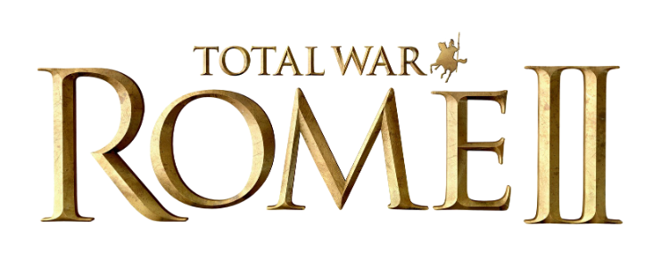
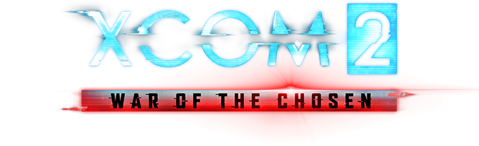

Стратегическая
игра. Игры данного жанра характеризуются тем, что игроку
для достижения цели необходимо применять стратегическое мышление, и оно
противопоставляется быстрым действиям и реакцией.
| Название игры |
Логотип |
Описание |
| Sid Meier’s Civilization V |
 |
Пятое воплощение легендарной «Цивилизации».Провести
свою нацию через века — от первобытного общества к высокотехнологичной
цивилизации, пережить золотой век и встать у истоков мировых религий,
изобрести колесо и атомный реактор, построить Пирамиды и Статую
Свободы, встретиться с величайшими политическими лидерами, проявить
себя в роли дипломата или стратега — Sid Meier’s Civilization V
позволит воплотить в жизнь ваши мечты!
|
| Total War: Rome II |
 |
Total War: Rome II - масштабная стратегия на новом
движке, который позволит отображать на экаранах игроков десятки тысяч
юнитов. Игровой сеттинг отправляет игроков в Древний Рим, продолжая
сюжет оригинального Rome: Total War. В игре доступно 117 фракций,
однако играть можно только девятью (без учета дополнительного контента)
из них. Разработчики обновили "систему провинций", улучшили и обновили
экран сражений, ввели совершенно новые виды юнитов, и многое другое. В
целом, геймплейная часть осталась без изменений - разработчики просто
улучшили и отполировали все элементы, которые нуждались в этом.
|
| XCOM 2 |
 |
В XCOM 2 мы впервые действуем в ситуации, когда
инопланетяне не просто вторглись на Землю — они победили, Мировой Совет
распустили, а организацию XCOM закрыли. При этом «чужие» не уничтожили
всё живое, а явно задумали какую-то гадость. При поддержке продавшихся
или подконтрольных им политиков они строят антиутопическое общество, в
котором якобы искоренены бедность, преступность и болезни, а взамен
повсюду насаждаются слежка и тотальный контроль. И только бывшие
руководители XCOM знают, что инопланетяне скрывают свои истинные,
весьма зловещие, цели. Поэтому они подпольно возрождают организацию и
начинают полномасштабную партизанскую войну.
|
 Стратегия
Стратегия